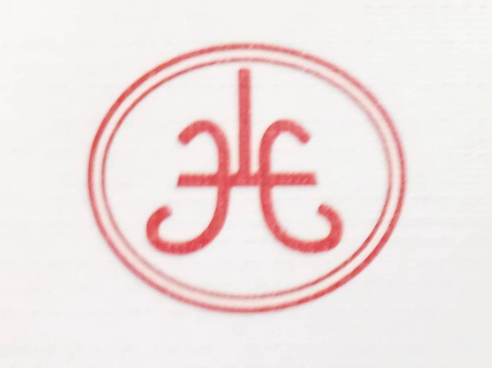
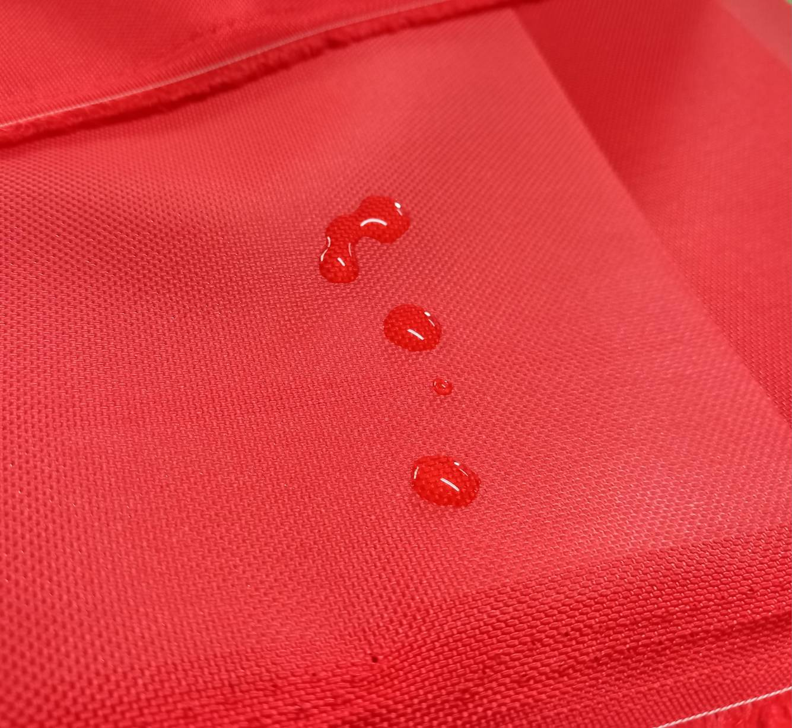

PU 塗層

產頻描述
PU塗層（聚氨酯塗層）是一種塗在織物上的薄而柔韌的塗層，能夠增強織物的防水性、耐用性和耐磨性。 它常用於戶外裝備、包包和夾克，在不增加太多重量的情況下，提升防護性和使用壽命。
規格
材質：尼龍 或 特多龍
纖度：70D、210D、420D、600D、840D、1680D（常見規格）
幅寬：150公分
克重：130–360公克/平方公尺（取決於纖度和織布方式）
返回布料